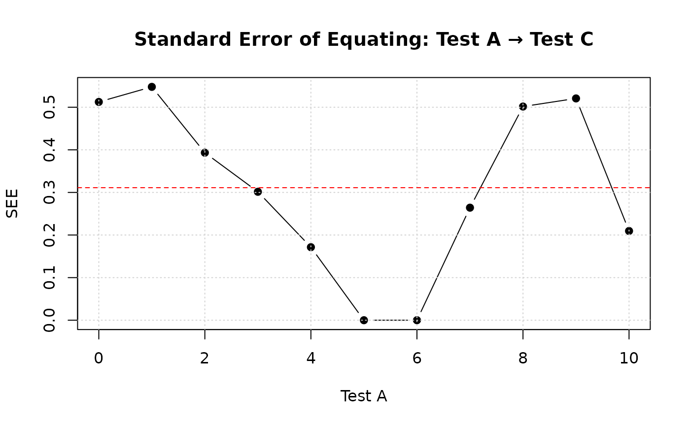

Introduction to Leunbach test equating
Magnus Johansson, PhD
2026-01-27
Source:vignettes/intro.Rmd
intro.RmdThis document provides an overview of how to do direct and indirect
equating using the leunbachR package for R, which is based
on the DIGRAM implementation of the Leunbach method.
Direct equating is made using the common person link between tests, meaning that the same individuals have taken two different tests that do not share any items.
Indirect equating connects test A and C through test B, where some respondents have taken both tests A and B and some have taken both tests B and C, but none have taken tests A and C, thus the indirect connection between A and C through B.
A basic assumption of the Leunbach method is that the observed sum score is a sufficient metric for the latent score, meaning that the items underlying the sum score fulfill the psychometric requirements of a Rasch model.
Direct equating
Looking at our data, we can see that it has two variables containing
sum scores from the two tests that we want to equate. This is the type
of input expected by the functions in leunbachR. Data needs
to be in the form/class of either a data.frame or matrix.
d3a <- read.delim("data/data3a.csv", sep = ";")
head(d3a)## a_sum c_sum
## 1 1 8
## 2 4 4
## 3 4 7
## 4 6 3
## 5 8 5
## 6 6 6First, we estimate the model.
fit <- leunbach_ipf(d3a, verbose = FALSE)## Warning in leunbach_ipf(d3a, verbose = FALSE): Removed 2 rows with missing
## valuesFor most functions in this package, you can use print(),
summary(), and plot() to investigate the
results. All functions have documentation that you can access using for
instance ?leunbach_ipf in the R console.
summary(fit)## Leunbach Score Parameter Estimation - Summary
## ==============================================
## Power Series Distribution with Generalized Symmetric Functions
##
## N = 498 observations
## Test 1: scores 0 to 10 (observed: 0 to 10)
## Test 2: scores 0 to 9 (observed: 1 to 9)
## Total: scores 0 to 19 (observed: 1 to 19)
##
## === Goodness of Fit ===
##
## 1. Likelihood Ratio Test (observed vs expected counts):
## Likelihood ratio G² = 53.75 (df = 63, p = 0.7904)
## Pearson chi-square = 49.08
##
## 2. Goodman-Kruskal Gamma Test (one-sided):
## Tests if observed correlation exceeds expected under the model.
## Gamma (observed) = -0.0461
## Gamma (expected) = -0.0501
## Standard error = 0.0395
## Z statistic = -0.10 (p = 0.5405, one-sided)
##
## 3. Orbit Analysis (person fit):
## Run analyze_orbits() separately to assess the number of cases
## outside 95% confidence regions of orbit distributions.
##
## Converged: TRUE (after 23 iterations)
print(fit)## Leunbach Score Parameter Estimation
## ====================================
## Power Series Distribution with Generalized Symmetric Functions
##
## N = 498 observations
##
## Test 1 score parameters (gamma):
##
## Score Frequency Gamma Log_Gamma
## 0 4 1.000000 0.000000
## 1 15 3.307358 1.196150
## 2 33 6.817996 1.919566
## 3 72 14.259080 2.657394
## 4 84 16.280189 2.789949
## 5 94 18.105331 2.896206
## 6 88 17.476723 2.860870
## 7 44 9.027916 2.200322
## 8 41 8.427631 2.131516
## 9 20 4.179715 1.430243
## 10 3 0.651356 -0.428699
##
## Test 2 score parameters (delta):
##
## Score Frequency Delta Log_Delta
## 0 0 0.000000 NA
## 1 12 1.000000 0.000000
## 2 32 2.453814 0.897644
## 3 57 4.122441 1.416445
## 4 88 6.247856 1.832238
## 5 84 6.072293 1.803736
## 6 89 6.343274 1.847395
## 7 73 5.337807 1.674815
## 8 43 3.203051 1.164104
## 9 20 1.535259 0.428699
##
## Total score parameters (sigma = Test1 + Test2):
##
## Score Frequency Sigma Log_Sigma
## 0 0 0.000000 NA
## 1 0 1.000000 0.000000
## 2 0 5.761172 1.751141
## 3 2 19.056078 2.947386
## 4 4 50.871418 3.929301
## 5 14 106.112295 4.664498
## 6 25 185.860485 5.224996
## 7 39 285.824799 5.655379
## 8 54 378.957812 5.937425
## 9 70 453.576111 6.117163
## 10 61 487.507508 6.189306
## 11 61 466.066469 6.144328
## 12 82 407.843796 6.010884
## 13 35 313.515021 5.747847
## 14 21 214.873301 5.370049
## 15 13 131.201551 4.876735
## 16 11 67.296568 4.209109
## 17 5 29.803253 3.394618
## 18 1 8.503273 2.140451
## 19 0 1.000000 0.000000
##
## Converged: TRUE (after 23 iterations)
##
## --- Goodness of Fit ---
##
## 1. Likelihood Ratio Test:
## LR = 53.75 DF = 63 p = 0.7904
##
## 2. Goodman-Kruskal Gamma Test (one-sided):
## Gamma (observed) = -0.0461
## Gamma (expected) = -0.0501
## SE = 0.0395
## Z = -0.10 p = 0.5405
##
## 3. Orbit Analysis:
## Use analyze_orbits() to assess person fit within total score strataAnalyze orbits
orb <- analyze_orbits(fit)
summary(orb)## Leunbach Orbit Analysis - Summary
## ==================================
##
## Significant differences between Test1 and Test2:
## Test1 Test2 N P(T1<T2) P(T1>T2)
## --------------------------------------------
## 0 6 1 0.0341
## 0 7 1 0.0187
## 0 8 1 0.0085
## 1 8 3 0.0267
## 1 9 2 0.0104
## 2 9 1 0.0225
## 8 1 2 0.0186
## 9 2 4 0.0234
## 9 3 3 0.0462
## 10 5 1 0.0301
##
## 19 (3.8%) persons with significant differences
## 15.3 (3.1%) expected
##
## 95% CI: [1.6%, 4.6%]
## Chi-square = 0.91, df = 1, p = 0.3388
print(orb)## Leunbach Orbit Analysis
## =======================
##
## N = 498 observations
## Significance level: 5.0%
##
## Critical levels for person fit assessment:
##
## Score N Crit_Left Crit_Right Crit_Combined DF
## 3 2 0.000 0.000 0.000 3
## 4 4 0.000 0.000 0.000 4
## 5 14 0.000 0.000 0.000 5
## 6 25 3.413 0.000 3.413 6
## 7 39 1.868 0.000 1.868 7
## 8 54 0.845 2.382 3.228 8
## 9 70 2.674 1.858 4.532 9
## 10 61 1.042 0.857 1.899 9
## 11 61 2.246 2.340 4.586 8
## 12 82 0.000 4.617 4.617 7
## 13 35 0.000 0.856 0.856 6
## 14 21 0.000 1.894 1.894 5
## 15 13 0.000 3.015 3.015 4
## 16 11 0.000 0.000 0.000 3
## 17 5 0.000 0.000 0.000 2
## 18 1 0.000 0.000 0.000 1
##
## 19 (3.8%) persons with significant differences between measurements
## 15.3 (3.1%) expected
##
## 95% Confidence interval: [1.6%, 4.6%]
## Chi-square = 0.91, df = 1, p = 0.3388
plot(orb)
plot(orb, type = "significant")
Specific total scores can also be analyzed.
get_orbit(orb, total_score = 5)## test1 test2 expected_pct cum_left cum_right observed
## 1 0 5 5.72 5.72 100.00 0
## 2 1 4 19.47 25.20 94.28 1
## 3 2 3 26.49 51.68 74.80 6
## 4 3 2 32.97 84.66 48.32 4
## 5 4 1 15.34 100.00 15.34 3
## 6 5 0 0.00 100.00 0.00 0Equating
leunbach_equate(fit, direction = "1to2")## Leunbach Equating: Test1 to Test2
## Method: optimize
## ==========================================
##
## Test1 Theta Expected_Test2 Rounded_Test2
## 0 -5.00000 1.00 1
## 1 -1.43602 1.73 2
## 2 -0.86290 2.51 3
## 3 -0.50963 3.37 3
## 4 -0.23484 4.29 4
## 5 0.00633 5.21 5
## 6 0.24214 6.09 6
## 7 0.50560 6.91 7
## 8 0.86585 7.69 8
## 9 1.57598 8.46 8
## 10 5.00000 9.00 9Bootstrap
If you have installed the package mirai and have a
computer with multiple CPU cores, you can significantly reduce the time
needed for bootstrap. Note that not all cores are equal. For instance,
on a modern Mac, you should only use the “performance cores”, not the
“efficiency cores”.
For the purposes of this vignette, we only use 100 bootstrap iterations. It is recommended to use at least 1000.
boot <- leunbach_bootstrap(fit, n_cores = 4, verbose = TRUE, nsim = 100)## Parametric Bootstrap for Leunbach Model
## ========================================
##
## Optimization method: optimize
## Running 100 bootstrap samples using 4 cores...
##
## Starting 4 daemons...
## | | | 0% | |= | 1% | |= | 2% | |== | 3% | |=== | 4% | |==== | 5% | |==== | 6% | |===== | 7% | |====== | 8% | |====== | 9% | |======= | 10% | |======== | 11% | |======== | 12% | |========= | 13% | |========== | 14% | |========== | 15% | |=========== | 16% | |============ | 17% | |============= | 18% | |============= | 19% | |============== | 20% | |=============== | 21% | |=============== | 22% | |================ | 23% | |================= | 24% | |================== | 25% | |================== | 26% | |=================== | 27% | |==================== | 28% | |==================== | 29% | |===================== | 30% | |====================== | 31% | |====================== | 32% | |======================= | 33% | |======================== | 34% | |======================== | 35% | |========================= | 36% | |========================== | 37% | |=========================== | 38% | |=========================== | 39% | |============================ | 40% | |============================= | 41% | |============================= | 42% | |============================== | 43% | |=============================== | 44% | |================================ | 45% | |================================ | 46% | |================================= | 47% | |================================== | 48% | |================================== | 49% | |=================================== | 50% | |==================================== | 51% | |==================================== | 52% | |===================================== | 53% | |====================================== | 54% | |====================================== | 55% | |======================================= | 56% | |======================================== | 57% | |========================================= | 58% | |========================================= | 59% | |========================================== | 60% | |=========================================== | 61% | |=========================================== | 62% | |============================================ | 63% | |============================================= | 64% | |============================================== | 65% | |============================================== | 66% | |=============================================== | 67% | |================================================ | 68% | |================================================ | 69% | |================================================= | 70% | |================================================== | 71% | |================================================== | 72% | |=================================================== | 73% | |==================================================== | 74% | |==================================================== | 75% | |===================================================== | 76% | |====================================================== | 77% | |======================================================= | 78% | |======================================================= | 79% | |======================================================== | 80% | |========================================================= | 81% | |========================================================= | 82% | |========================================================== | 83% | |=========================================================== | 84% | |============================================================ | 85% | |============================================================ | 86% | |============================================================= | 87% | |============================================================== | 88% | |============================================================== | 89% | |=============================================================== | 90% | |================================================================ | 91% | |================================================================ | 92% | |================================================================= | 93% | |================================================================== | 94% | |================================================================== | 95% | |=================================================================== | 96% | |==================================================================== | 97% | |===================================================================== | 98% | |===================================================================== | 99% | |======================================================================| 100%
##
##
## Bootstrap complete.
## Valid samples: 100 of 100
## Bootstrap p-value for LR test: 0.860
## Average SEE (Test1 to Test2): 0.23
## Average SEE (Test2 to Test1): 0.26
print(boot)## Leunbach Model - Parametric Bootstrap Results
## ==============================================
##
## Bootstrap samples: 100 (100 valid)
## Processing: parallel (4 cores)
## Optimization method: optimize
## SEE type: rounded scores
##
## Assessment of significance by parametric bootstrapping:
##
## 1. Likelihood Ratio Test:
## Observed LR = 53.75 (df = 63)
## Asymptotic p-value: p = 0.7904
## Bootstrap p-value: p = 0.8600
##
## 2. Goodman-Kruskal Gamma Test (one-sided):
## Observed Z = -0.10
## Asymptotic p-value: p = 0.5405
## Bootstrap p-value: p = 0.7000
##
## Equating Test1 to Test2 (with 95% CI)
## ============================================================================
##
## Frequency of bootstrap errors
## Score Theta Rounded Expected 95% CI SEE -2 -1 0 +1 +2
## --------------------------------------------------------------------------------------------------
## 0 -5.00000 1 1.00 [ 1.00, 1.00] 0.00 0.0 0.0 100.0 0.0 0.0
## 1 -1.43602 2 1.73 [ 1.29, 2.22] 0.34 0.0 13.0 87.0 0.0 0.0
## 2 -0.86290 3 2.51 [ 2.09, 2.96] 0.50 0.0 43.0 57.0 0.0 0.0
## 3 -0.50963 3 3.37 [ 3.08, 3.76] 0.42 0.0 0.0 78.0 22.0 0.0
## 4 -0.23484 4 4.29 [ 4.05, 4.56] 0.27 0.0 0.0 92.0 8.0 0.0
## 5 0.00633 5 5.21 [ 4.99, 5.44] 0.00 0.0 0.0 100.0 0.0 0.0
## 6 0.24214 6 6.09 [ 5.90, 6.34] 0.00 0.0 0.0 100.0 0.0 0.0
## 7 0.50560 7 6.91 [ 6.61, 7.24] 0.10 0.0 1.0 99.0 0.0 0.0
## 8 0.86585 8 7.69 [ 7.33, 8.09] 0.36 0.0 15.0 85.0 0.0 0.0
## 9 1.57598 8 8.46 [ 8.14, 9.00] 0.50 0.0 0.0 53.0 47.0 0.0
## 10 5.00000 9 9.00 [ 9.00, 9.00] 0.00 0.0 0.0 100.0 0.0 0.0
## --------------------------------------------------------------------------------------------------
## Average SEE: 0.23
##
## Equating Test2 to Test1 (with 95% CI)
## ============================================================================
##
## Frequency of bootstrap errors
## Score Theta Rounded Expected 95% CI SEE -2 -1 0 +1 +2
## --------------------------------------------------------------------------------------------------
## 1 -5.00000 0 0.00 [ 0.00, 0.00] 0.10 0.0 0.0 99.0 1.0 0.0
## 2 -1.18397 1 1.36 [ 0.74, 1.90] 0.45 0.0 0.0 72.0 28.0 0.0
## 3 -0.64238 3 2.59 [ 2.06, 2.92] 0.49 0.0 37.0 63.0 0.0 0.0
## 4 -0.31551 4 3.69 [ 3.30, 3.95] 0.30 0.0 10.0 90.0 0.0 0.0
## 5 -0.04910 5 4.76 [ 4.52, 5.02] 0.14 0.0 2.0 98.0 0.0 0.0
## 6 0.21610 6 5.89 [ 5.64, 6.14] 0.00 0.0 0.0 100.0 0.0 0.0
## 7 0.53922 7 7.11 [ 6.73, 7.55] 0.22 0.0 0.0 95.0 5.0 0.0
## 8 1.07404 8 8.39 [ 7.89, 8.83] 0.46 0.0 0.0 70.0 30.0 0.0
## 9 5.00000 10 10.00 [ 9.00, 10.00] 0.20 0.0 4.0 96.0 0.0 0.0
## --------------------------------------------------------------------------------------------------
## Average SEE: 0.26You can also get the equating table as a separate object.
get_equating_table(boot)## Test1 log_theta rounded expected ci_lower ci_upper see
## 0 0 -5.0000 1 1.00 1.00 1.00 0.00
## 1 1 -1.4360 2 1.73 1.29 2.22 0.34
## 2 2 -0.8629 3 2.51 2.09 2.96 0.50
## 3 3 -0.5096 3 3.37 3.08 3.76 0.42
## 4 4 -0.2348 4 4.29 4.05 4.56 0.27
## 5 5 0.0063 5 5.21 4.99 5.44 0.00
## 6 6 0.2421 6 6.09 5.90 6.34 0.00
## 7 7 0.5056 7 6.91 6.61 7.24 0.10
## 8 8 0.8659 8 7.69 7.33 8.09 0.36
## 9 9 1.5760 8 8.46 8.14 9.00 0.50
## 10 10 5.0000 9 9.00 9.00 9.00 0.00Write the table to a CSV file.
write.csv(get_equating_table(boot), file = "eqtable.csv")Indirect equating
For this, we read a dataset with three tests.
d1 <- read.delim("data/data1.csv", sep = ";")
head(d1)## a_sum b_sum c_sum
## 1 2 4 NA
## 2 2 5 NA
## 3 5 7 NA
## 4 4 5 NA
## 5 5 5 NA
## 6 7 7 NAWe will estimate two models before the indirect equating procedure. Test A with Test B; and Test B with Test C. Then the results will be used to indirectly equate Test A with Test C
The code below uses base R methods to select the columns in the dataframe, first 1 and 2, second 2 and 3.
fit_ab <- leunbach_ipf(d1[,c(1,2)])## Warning in leunbach_ipf(d1[, c(1, 2)]): Removed 500 rows with missing values
fit_bc <- leunbach_ipf(d1[,c(2,3)])## Warning in leunbach_ipf(d1[, c(2, 3)]): Removed 500 rows with missing valuesYou can of course use the objects fit_ab and
fit_bc to analyze orbits too, but we’ll skip that step
here.
indirect1 <- leunbach_indirect_equate(fit_ab, fit_bc,
direction_ab = "1to2",
direction_bc = "1to2")
print(indirect1)## Leunbach Indirect Equating
## ==========================
##
## Path: Test A -> Test B -> Test C
## Method: optimize
##
## Source (Test A) range: 0 to 10
## Anchor (Test B) range: 0 to 10
## Target (Test C) range: 0 to 10
##
## Test A Theta Expected_Test C Rounded_Test C
## 0 -5.0000 0.00 0
## 1 -2.0865 1.23 1
## 2 -1.4308 2.20 2
## 3 -0.9309 3.22 3
## 4 -0.4880 4.19 4
## 5 -0.0846 5.08 5
## 6 0.3154 5.98 6
## 7 0.7833 7.09 7
## 8 1.4251 8.44 8
## 9 2.3503 9.42 9
## 10 5.0000 10.00 10To get the table as a dataframe:
id1table <- indirect1[["equating_table"]]Bootstrap
Again, only using 100 simulations for demonstration purposes.
boot_indirect1 <- leunbach_indirect_bootstrap(fit_ab, fit_bc,
direction_ab = "1to2",
direction_bc = "1to2",
nsim = 100,
verbose = TRUE, n_cores = 4)## Parametric Bootstrap for Indirect Equating
## ===========================================
##
## Path: Test A -> Test B -> Test C
## Optimization method: optimize
## Running 100 bootstrap samples using 4 cores...
##
## Starting 4 daemons...
## | | | 0% | |= | 1% | |= | 2% | |== | 3% | |=== | 4% | |==== | 5% | |==== | 6% | |===== | 7% | |====== | 8% | |====== | 9% | |======= | 10% | |======== | 11% | |======== | 12% | |========= | 13% | |========== | 14% | |========== | 15% | |=========== | 16% | |============ | 17% | |============= | 18% | |============= | 19% | |============== | 20% | |=============== | 21% | |=============== | 22% | |================ | 23% | |================= | 24% | |================== | 25% | |================== | 26% | |=================== | 27% | |==================== | 28% | |==================== | 29% | |===================== | 30% | |====================== | 31% | |====================== | 32% | |======================= | 33% | |======================== | 34% | |======================== | 35% | |========================= | 36% | |========================== | 37% | |=========================== | 38% | |=========================== | 39% | |============================ | 40% | |============================= | 41% | |============================= | 42% | |============================== | 43% | |=============================== | 44% | |================================ | 45% | |================================ | 46% | |================================= | 47% | |================================== | 48% | |================================== | 49% | |=================================== | 50% | |==================================== | 51% | |==================================== | 52% | |===================================== | 53% | |====================================== | 54% | |====================================== | 55% | |======================================= | 56% | |======================================== | 57% | |========================================= | 58% | |========================================= | 59% | |========================================== | 60% | |=========================================== | 61% | |=========================================== | 62% | |============================================ | 63% | |============================================= | 64% | |============================================== | 65% | |============================================== | 66% | |=============================================== | 67% | |================================================ | 68% | |================================================ | 69% | |================================================= | 70% | |================================================== | 71% | |================================================== | 72% | |=================================================== | 73% | |==================================================== | 74% | |==================================================== | 75% | |===================================================== | 76% | |====================================================== | 77% | |======================================================= | 78% | |======================================================= | 79% | |======================================================== | 80% | |========================================================= | 81% | |========================================================= | 82% | |========================================================== | 83% | |=========================================================== | 84% | |============================================================ | 85% | |============================================================ | 86% | |============================================================= | 87% | |============================================================== | 88% | |============================================================== | 89% | |=============================================================== | 90% | |================================================================ | 91% | |================================================================ | 92% | |================================================================= | 93% | |================================================================== | 94% | |================================================================== | 95% | |=================================================================== | 96% | |==================================================================== | 97% | |===================================================================== | 98% | |===================================================================== | 99% | |======================================================================| 100%
##
##
## Bootstrap complete.
## Valid samples: 100 of 100
## Bootstrap p-value for LR test (A-B): 0.060
## Bootstrap p-value for LR test (B-C): 0.130
## Bootstrap p-value for Gamma test (A-B): 0.780
## Bootstrap p-value for Gamma test (B-C): 0.970
## Average SEE: 0.31
print(boot_indirect1)## Leunbach Indirect Equating - Parametric Bootstrap Results
## ==========================================================
##
## Path: Test A -> Test B -> Test C
## Bootstrap samples: 100 (100 valid)
## Processing: parallel (4 cores)
## Optimization method: optimize
## SEE type: rounded scores
##
## Assessment of significance by parametric bootstrapping:
##
## Equating A-B (Test A -> Test B):
## 1. Likelihood Ratio Test:
## Observed LR = 77.72 (df = 79)
## Asymptotic p-value: p = 0.5197
## Bootstrap p-value: p = 0.0600
## 2. Goodman-Kruskal Gamma Test (one-sided):
## Observed Z = -0.10
## Asymptotic p-value: p = 0.5404
## Bootstrap p-value: p = 0.7800
##
## Equating B-C (Test B -> Test C):
## 1. Likelihood Ratio Test:
## Observed LR = 82.73 (df = 80)
## Asymptotic p-value: p = 0.3950
## Bootstrap p-value: p = 0.1300
## 2. Goodman-Kruskal Gamma Test (one-sided):
## Observed Z = -0.26
## Asymptotic p-value: p = 0.6021
## Bootstrap p-value: p = 0.9700
##
## Indirect Equating: Test A -> Test C (with 95% CI)
## =======================================================================================
##
## Frequency of bootstrap errors
## Score Theta Rounded Expected 95% CI SEE -2 -1 0 +1 +2 Failed%
## --------------------------------------------------------------------------------------------------------
## 0 -5.00000 0 0.00 [ 0.00, 1.03] 0.51 0.0 0.0 61.0 38.0 1.0 0.0%
## 1 -2.08654 1 1.23 [ 0.38, 2.03] 0.55 0.0 5.0 63.0 32.0 0.0 0.0%
## 2 -1.43075 2 2.20 [ 1.64, 2.76] 0.39 0.0 2.0 83.0 15.0 0.0 0.0%
## 3 -0.93091 3 3.22 [ 2.84, 3.56] 0.30 0.0 0.0 90.0 10.0 0.0 0.0%
## 4 -0.48803 4 4.19 [ 3.85, 4.51] 0.17 0.0 0.0 97.0 3.0 0.0 0.0%
## 5 -0.08464 5 5.08 [ 4.79, 5.37] 0.00 0.0 0.0 100.0 0.0 0.0 0.0%
## 6 0.31545 6 5.98 [ 5.64, 6.33] 0.00 0.0 0.0 100.0 0.0 0.0 0.0%
## 7 0.78325 7 7.09 [ 6.65, 7.54] 0.26 0.0 2.0 93.0 5.0 0.0 0.0%
## 8 1.42505 8 8.44 [ 7.68, 9.02] 0.50 0.0 0.0 53.0 47.0 0.0 0.0%
## 9 2.35035 9 9.42 [ 8.74, 10.00] 0.52 0.0 1.0 52.0 47.0 0.0 0.0%
## 10 5.00000 10 10.00 [ 9.35, 10.00] 0.21 0.0 4.5 95.5 0.0 0.0 12.0%
## --------------------------------------------------------------------------------------------------------
## Average SEE: 0.31
summary(boot_indirect1)## Leunbach Indirect Equating - Bootstrap Summary
## ===============================================
##
## Path: Test A -> Test B -> Test C
## Bootstrap samples: 100 (100 valid)
## Confidence level: 95%
## SEE type: rounded scores
##
## Model Fit Summary:
##
## Equating A-B (Test A -> Test B):
## LR test: asymptotic p = 0.5197, bootstrap p = 0.0600
## Gamma test: asymptotic p = 0.5404, bootstrap p = 0.7800
##
## Equating B-C (Test B -> Test C):
## LR test: asymptotic p = 0.3950, bootstrap p = 0.1300
## Gamma test: asymptotic p = 0.6021, bootstrap p = 0.9700
##
## Average SEE: 0.31
##
## Scores with >5% bootstrap failures:
## Score 10: 12.0% failedGet a clean table and write to a CSV file.
indirect_table <- get_indirect_equating_table(boot_indirect1)
indirect_table## Test A log_theta rounded expected ci_lower ci_upper see pct_failed
## 0 0 -5.0000 0 0.00 0.00 1.03 0.51 0
## 1 1 -2.0865 1 1.23 0.38 2.03 0.55 0
## 2 2 -1.4308 2 2.20 1.64 2.76 0.39 0
## 3 3 -0.9309 3 3.22 2.84 3.56 0.30 0
## 4 4 -0.4880 4 4.19 3.85 4.51 0.17 0
## 5 5 -0.0846 5 5.08 4.79 5.37 0.00 0
## 6 6 0.3154 6 5.98 5.64 6.33 0.00 0
## 7 7 0.7833 7 7.09 6.65 7.54 0.26 0
## 8 8 1.4251 8 8.44 7.68 9.02 0.50 0
## 9 9 2.3503 9 9.42 8.74 10.00 0.52 0
## 10 10 5.0000 10 10.00 9.35 10.00 0.21 12
write.csv(indirect_table, file = "indirect_table.csv")
plot(boot_indirect1, type = "equating")
plot(boot_indirect1, type = "see")